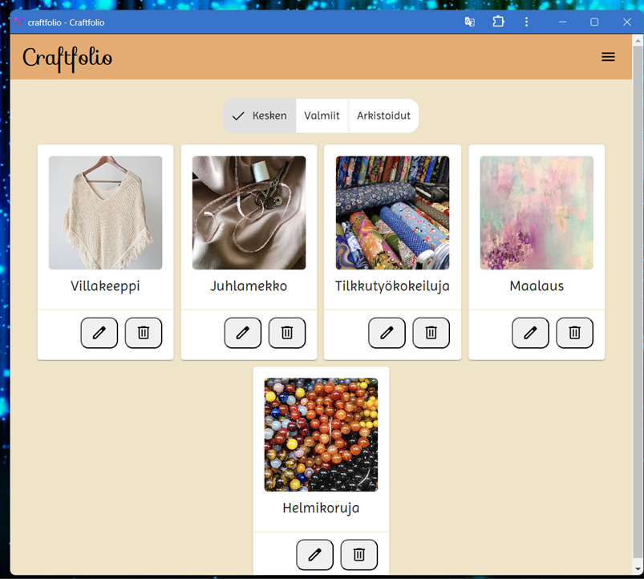

Aloita siitä että selität frotnendin kehityksen suunnittelun
POPUP
NAVI
Vielä joku
Mitä opin:
Sovelluksen PWA versio toimii paikallisesti koneella, mutta elastic beanstlakissa olevaan versioon sitä ei saatu toimimaan. Sovelluksen muuttaminen PWA:ksi aiheutti ongelmia, yllättävien ja epäselvien virheilmoitusten vuoksi. Siksi sen siirtäminen pilveen venyi. Siirtäessä ilmeni ongelmia, joita ei ehditty selvittämään.
Mitä opin: Opin lisää PWA:sta sekä virheilmoitusten selvittämisestä. package.json? Tämä olisi kannattanut tehdä jo paljon aiemmin.
PWA-versio lokaalina
Navigaatiota muutettiin usein. Oli hieman haastavaa löytää juuri sellaista tutoriaalia, joka olisi vastannut omaa suunnitelmaa. Haasettta loi myös ymmärtää Angular materials "toolbar" komponentin rakennetta (useita sisäkkäisiä komponentteja)
KOMPONENTTIKAAVIO!!
honorable mentions: PROJEKTINÄKYMÄ ja responsiivisuus ja pop-up ikkuna
Ylös reflektio siitä mitä opit yms.
Luin myös paljon Angular Material Custom themestä (päätettiin jättää pois) sekä image optimationista
Yleisesti mitä opin frontista: